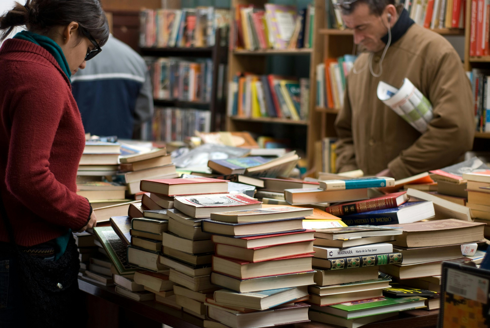
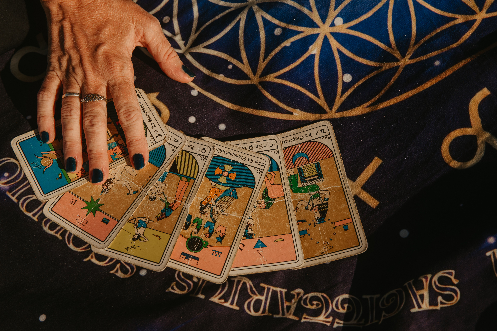
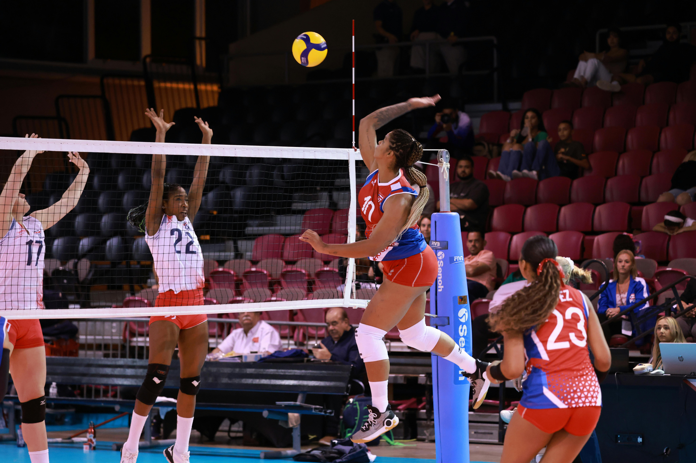
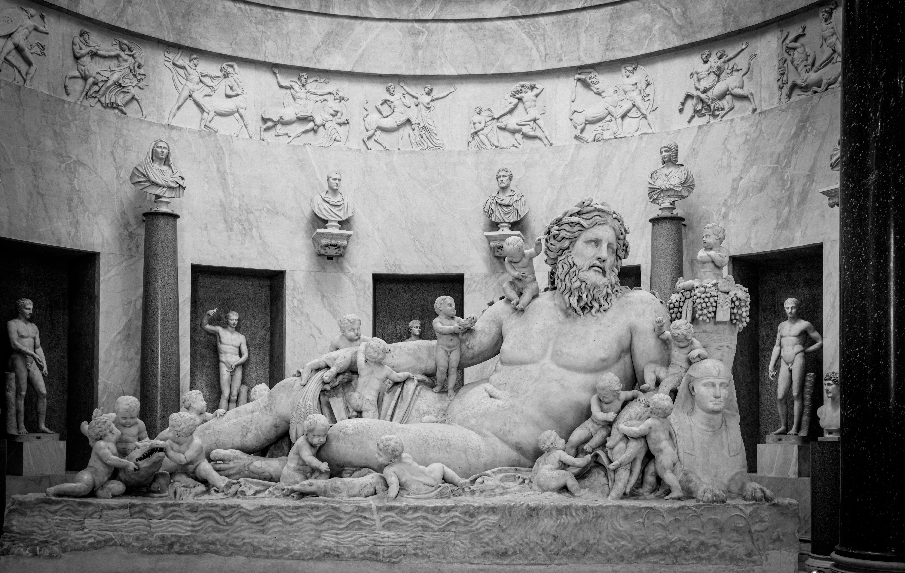
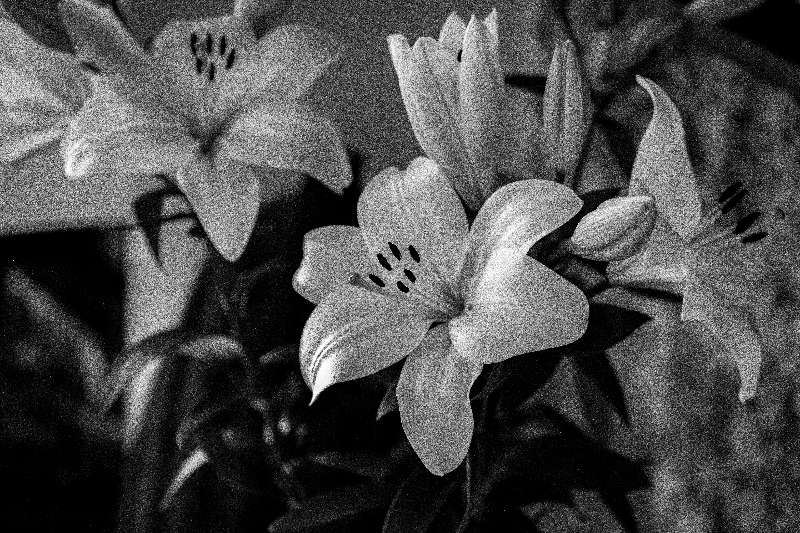
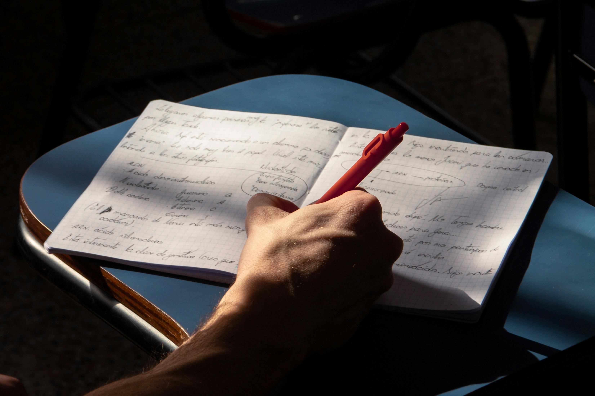
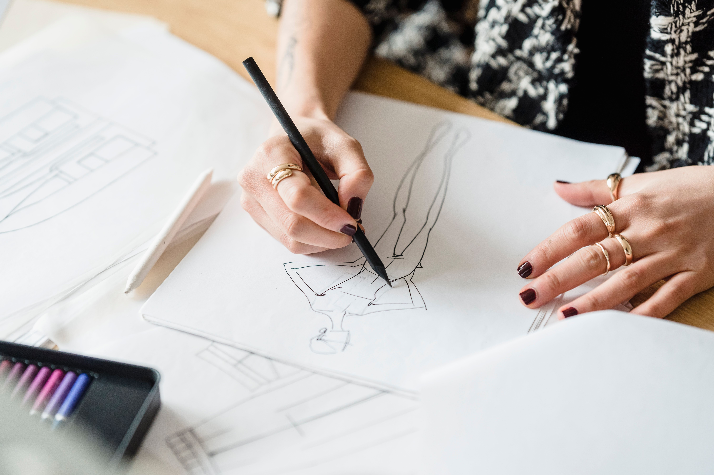

Alexia de Souza Conde de Campos.
Tenho 15 anos, estou no segundo ano do ensino médio. Tenho afinidade com matérias da áreas de humanas como, filosofia, português, artes e história. Não gosto de matemática, física e química
Minhas commidas favoritas.
- Palha italiana,
- Salpicão,
- Pão de quiejo,
- Brownie,
- Sushi,
- Batata frita
Minhas representações!







Sobre mim.
Sou Alexia,nascida em 2010 na cidade de juiz de fora. Completo 16 anos no mês de junho.
Atualmente não há nada que eu realmente goste na cidade alem de sair com meus amigos ou família.
Futuramente quero cursar a faculdade de moda, mas tenho uma grande dúvida entre Biologia Marinha e Artes Visuais mas nada garantido.
Uma curiosidade, eu sou escritora em tempos livres.